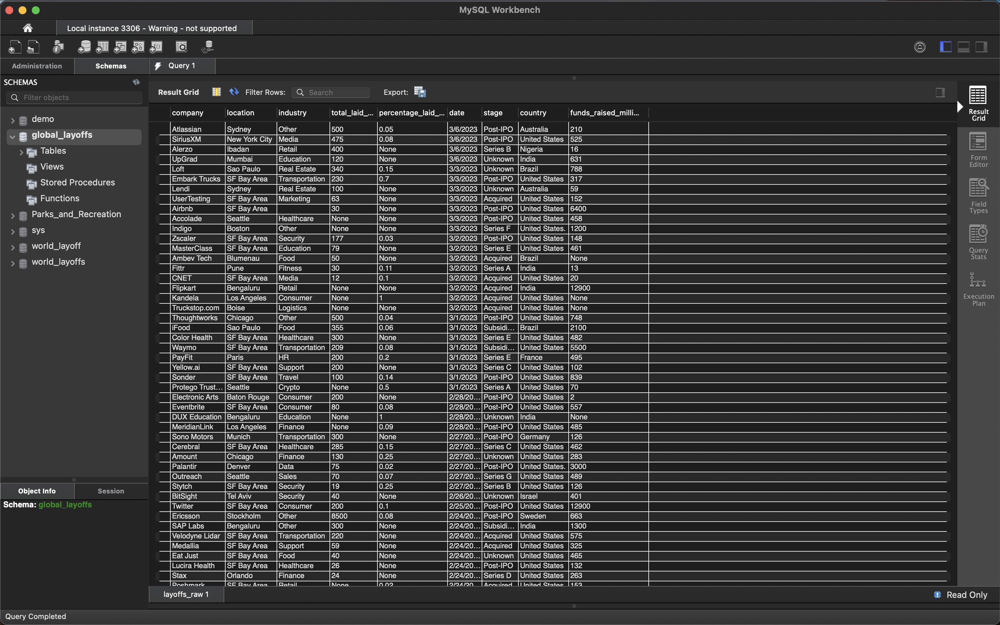
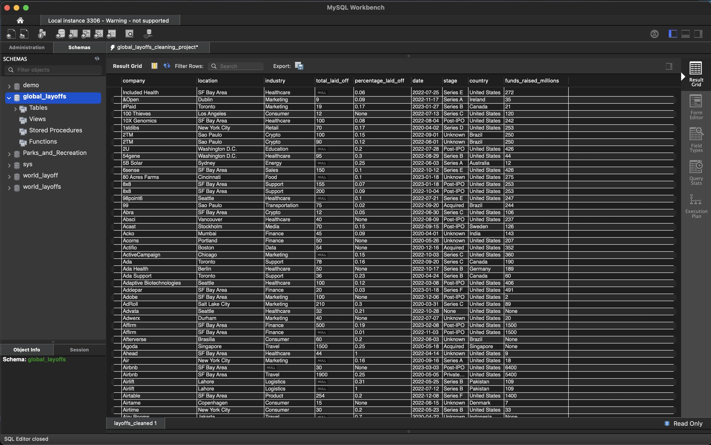

DATA CLEANING -
World Layoff Data
Data Set: Press Here
GitHub File: Press Here
Overview:
This project focuses on cleaning and preparing world layoff data using SQL. The goal is to structure and standardise the data for better analysis and insights. The project demonstrates various SQL techniques for data manipulation and cleaning, including removing duplicates, standardising formats, and handling null values.
Key Skills Used:
• Data Cleaning: Removing duplicates, trimming whitespace, standardising values
• Data Analysis: Using SQL functions like ROW_NUMBER, JOIN, and CASE statements
• Data Structuring: Creating staging tables and cleaned datasets
Dataset Description:
The dataset consists of layoff data with fields such as company, location, industry, and total laid-off employees. It contains inconsistencies, such as duplicate rows and varying formats, which are addressed in this project.
Why This Project is Worth Doing:
• This project provides hands-on experience in using SQL for data cleaning, a crucial skill for data analysts.
• It allows for practice in applying SQL functions to manipulate and analyse data effectively.
• The project emphasises the importance of clean data for accurate analysis and reporting.
Step-by-Step Guide for Data Cleaning:
- Creating a Staged Data Table:
SELECT * FROM layoffs_raw;CREATE TABLE layoffs_staging LIKE layoffs_raw; - Copying Data:
INSERT INTO layoffs_staging SELECT * FROM layoffs_raw; - Removing Duplicates:
SELECT *, ROW_NUMBER() OVER (PARTITION BY company, location, industry, total_laid_off, percentage_laid_off, date) AS row_num FROM layoffs_staging;DELETE FROM layoffs_cleaned WHERE row_num > 1; - Standardising Data:
UPDATE layoffs_cleaned SET company = TRIM(company);UPDATE layoffs_cleaned SET industry = "Crypto" WHERE industry LIKE "Crypto%"; - Fixing Date Formats:
UPDATE layoffs_cleaned SET date = STR_TO_DATE(date, "%m/%d/%Y"); - Handling Null Values:
UPDATE layoffs_cleaned SET industry = NULL WHERE industry = ""; - Removing Unnecessary Columns:
ALTER TABLE layoffs_cleaned DROP COLUMN row_num; - Final Check:
SELECT * FROM layoffs_cleaned;
 Final Result:

CONCLUDING REMARKS
This project significantly enhanced my proficiency with SQL-based data cleaning, particularly in handling complex datasets. Working with real-world data issues, such as duplicates and inconsistent formats, reinforced the importance of clean data in delivering accurate analysis. Furthermore, the use of SQL functions like ROW_NUMBER and JOIN to standardise and structure data improved my ability to build efficient queries. These techniques, essential for ensuring data quality, will undoubtedly serve as a foundation for deeper data insights in future analytical tasks. The final dataset is now ready for exploratory data analysis.